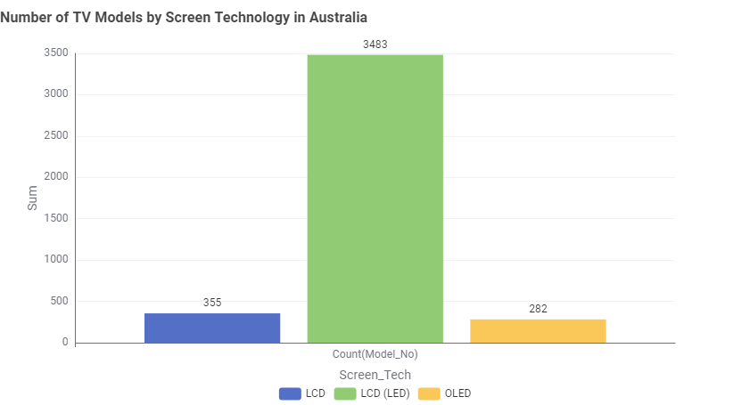

Types of TV Screen Technologies in Australia
Australian households today mainly use, LCD, LCD(LED) and OLED televisions. LCD(LED) having the highest availability in Australia.

Australian households today mainly use, LCD, LCD(LED) and OLED televisions. LCD(LED) having the highest availability in Australia.